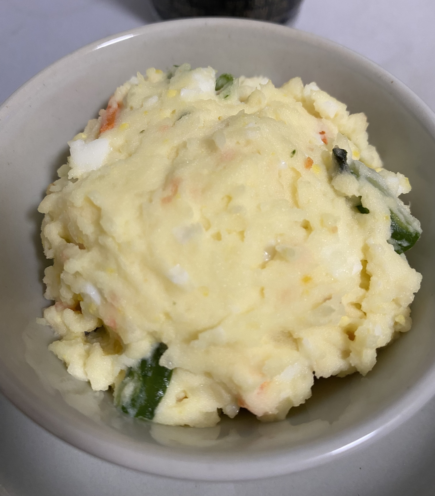

Home
Japanese Potato Salad Recipe

Description
Japanese-style potato salad is special in the veggies and eggy-tasting mayo used to make it.
A satisfying crunch accompanies each creamy bite. This is the perfect side dish to complete
any meal.
Ingredients
- potatoes
- carrots
- cucumbers
- eggs
- Kewpie mayo
- salt (optional)
Steps
- Cut potatoes into cubes. Cut carrots and cucumbers into thin strips.
- Boil potatoes, carrots, cucumbers, and eggs in a pot with water.
- Mash the potatoes in a big bowl.
- Peel the eggs and dice them.
- Add the carrots, cucumbers, and eggs to the same bowl.
-
Add Kewpie mayo and salt (if needed) to the mix and stir until all ingredients are
combined well.